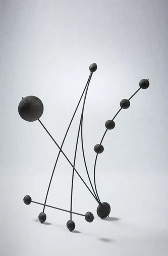

Bill Brady: Drawing with Metal
William “Bill” Brady, Jr., (American, b. 1943) learned metalsmithing from his father, which led him to his own creative practice primarily working with tin. He began by making replicas of early American objects, such as tin lanterns, cups and candlesticks, which he would sell at markets in New England and, later, California. Growing tired of copying historical designs, he began making his own work in the 1960s. During the 1970s, he spent a decade in Santa Cruz, living in a surplus Navy bus, before returning to rural Pennsylvania, where he continues to live near his father’s forge at the family home. Brady modified the bus to serve as home and studio—making work by day and sleeping under a skylight at night.
An avid draftsperson, Brady often references the drawings in his sketchbooks for inspiration: from ships, airplanes and spaceships to forms that evoke the human figure to abstract doodles and designs. Made with flat sheets of tin-plated steel (roofing tin) and welding rods, Brady’s sculptures are hammered and soldered together, sometimes including marbles and paint, with surfaces left to age over time. His hanging mobiles and standing sculptures are invigorated with life and motion, adding whimsy to his elegant designs. The strong linear quality of his sculpture echoes his drawing practice—drawing with metal.